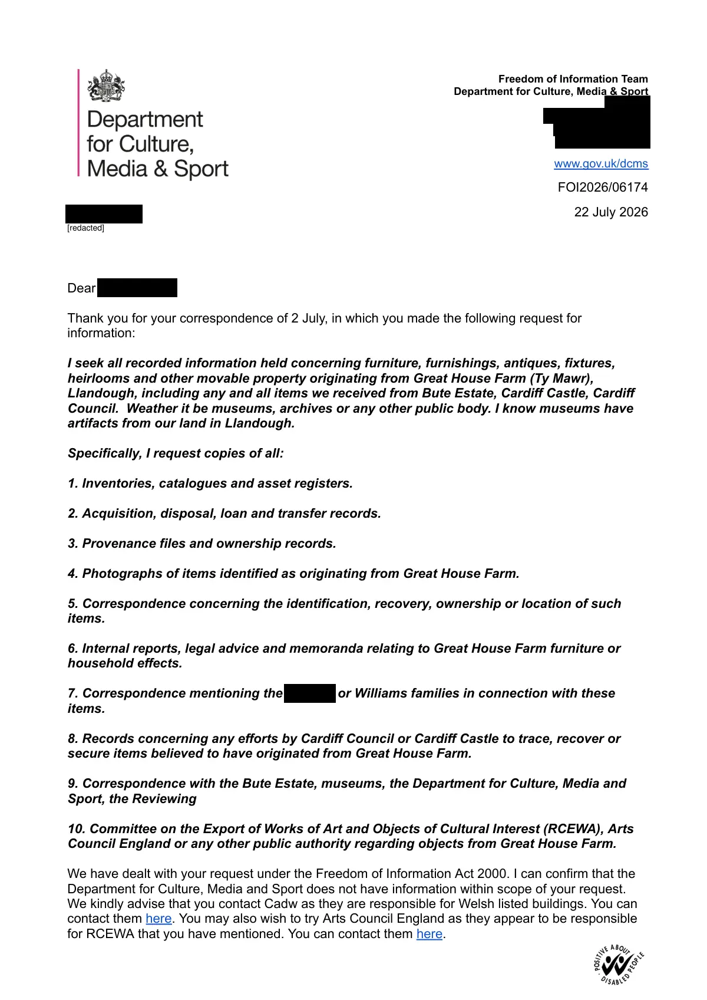

GHF-E106-R29-A1 correspondence (no disclosure)
FOI2026/06174 response

Transcript
Requester
Freedom of Information Team
Department for Culture, Media & Sport
[address redacted]
E:[email redacted]
www.gov.uk/dcms
FOI2026/06174
22 July 2026
Dear Requester ,
Thank you for your correspondence of 2 July, in which you made the following request for
information:
I seek all recorded information held concerning furniture, furnishings, antiques, fixtures,
heirlooms and other movable property originating from Great House Farm (Ty Mawr),
Llandough, including any and all items we received from Bute Estate, Cardiff Castle, Cardiff
Council. Weather it be museums, archives or any other public body. I know museums have
artifacts from our land in Llandough.
Specifically, I request copies of all:
1. Inventories, catalogues and asset registers.
2. Acquisition, disposal, loan and transfer records.
3. Provenance files and ownership records.
4. Photographs of items identified as originating from Great House Farm.
5. Correspondence concerning the identification, recovery, ownership or location of such
items.
6. Internal reports, legal advice and memoranda relating to Great House Farm furniture or
household effects.
Read more
7. Correspondence mentioning the Requester or Williams families in connection with these items. 8. Records concerning any efforts by Cardiff Council or Cardiff Castle to trace, recover or secure items believed to have originated from Great House Farm. 9. Correspondence with the Bute Estate, museums, the Department for Culture, Media and Sport, the Reviewing 10. Committee on the Export of Works of Art and Objects of Cultural Interest (RCEWA), Arts Council England or any other public authority regarding objects from Great House Farm. We have dealt with your request under the Freedom of Information Act 2000. I can confirm that the Department for Culture, Media and Sport does not have information within scope of your request. We kindly advise that you contact Cadw as they are responsible for Welsh listed buildings. You can contact them here. You may also wish to try Arts Council England as they appear to be responsible for RCEWA that you have mentioned. You can contact them here. [redacted] Yours sincerely, Freedom of Information Team Department for Culture, Media and Sport Complaints and comments As is customary in our replies, I should explain that if you are dissatisfied with any aspect of our response to your request for information, and/or wish to appeal against information being withheld from you, please send full details within two calendar months of the date of this response to: [email redacted]. You have the right to ask the Information Commissioner’s Office (ICO) to investigate any aspect of your complaint. Please note that the ICO is likely to expect internal complaints procedures to have been exhausted before beginning an investigation.
Artifact description
Restates the request concerning items from Great House Farm; response text is cut off before any substantive determination.
| Catalogue ID | GHF-E106-R29-A1 |
|---|---|
| What it is | PDF document from Department for Culture, Media and Sport. Attached to an email received on 22 July 2026, their reference FOI2026/06174. 2 pages. |
| From | Department for Culture, Media and Sport |
| Email received | 22 July 2026 |
| Their reference | FOI2026/06174 |
| Pages | 2 |
| File | _FOI2026_06174.pdf (133 KB) |
| State | Read |
Our integration
Part of the records enquiry thread with Department for Culture, Media and Sport opened 22 July 2026. The thread's standing classification is “correspondence (no disclosure)”.
Concern to test: whether this reply answers the question as asked, or a narrower one. Not checked against the original request wording here.
Related: The covering email · What They Don’t Say: WTDS-aaf4cff0-1 · EV-0498 in the evidence catalogue · Timeline · Disclosure Dartboard